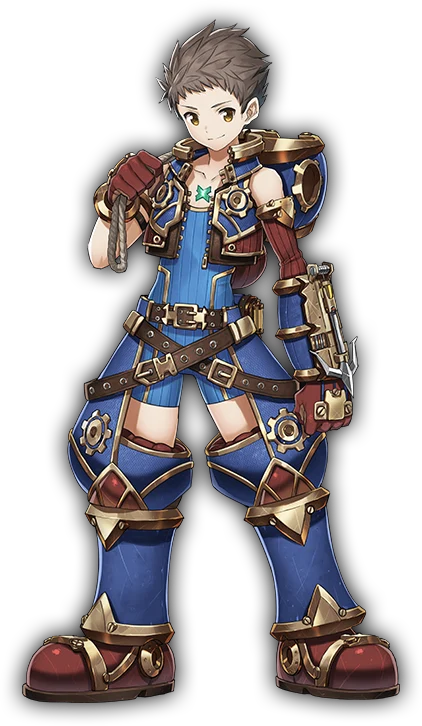
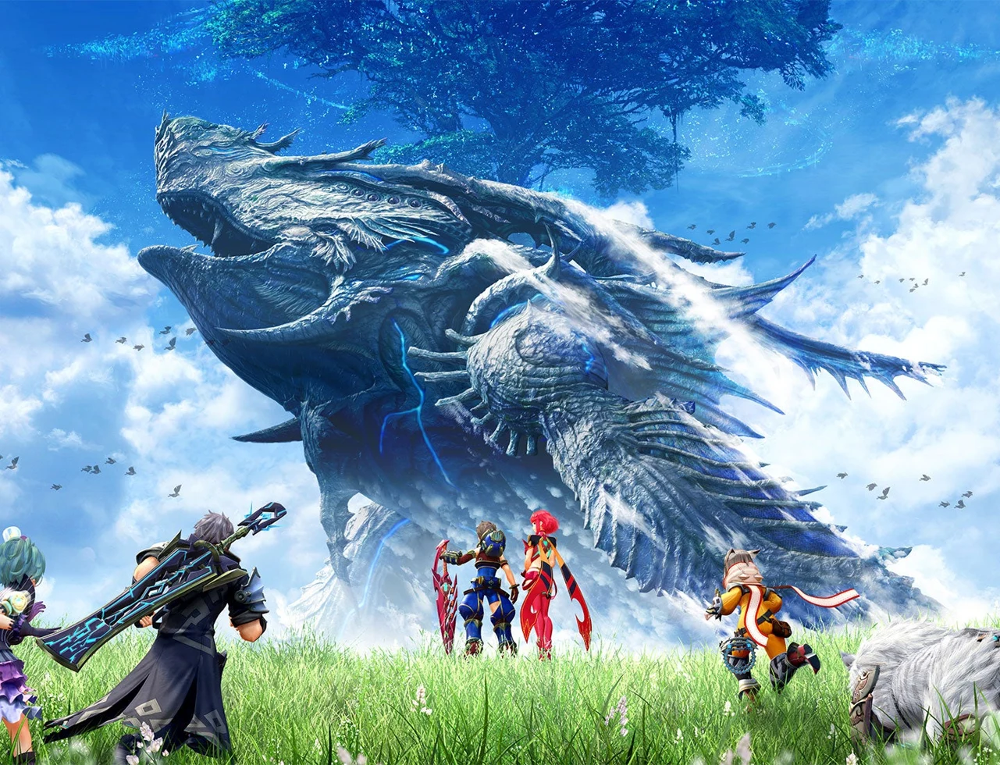
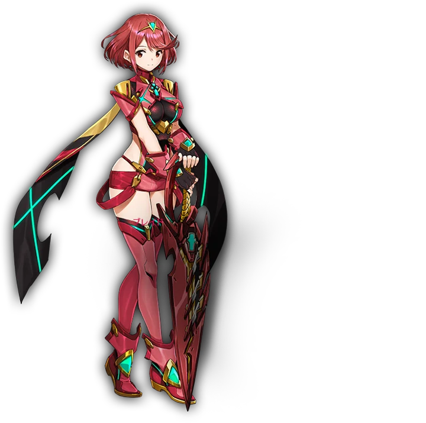

Rex
Salvager and Driver
An optimistic salvager who explores the Cloud Sea for lost treasure. Becoming Pyra’s Driver gives him a new purpose.
Xenoblade Chronicles Game Guide

Above a sea of clouds, a young salvager and a legendary Blade set out to find the fabled land of Elysium.
In Alrest, people build their homes on roaming Titans. Rex’s life changes when he meets Pyra, a Blade who asks him to take her to Elysium, a place said to lie atop the World Tree.
Drivers fight alongside Blades, who provide weapons and abilities. Timing Arts and combining elemental attacks give battles more options as the story unfolds.

Salvager and Driver
An optimistic salvager who explores the Cloud Sea for lost treasure. Becoming Pyra’s Driver gives him a new purpose.

The Aegis
A powerful fire Blade who shares her strength with Rex. Her wish to reach Elysium sets their journey in motion.